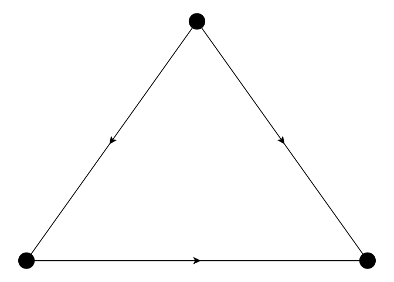
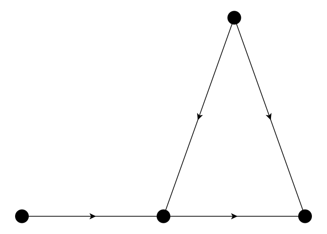
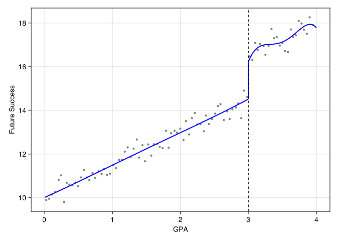

using CairoMakie
using GraphMakie, Graphs
using Distributions, Random, LinearAlgebra
using RDRobust
using Panelest
using Vcov
using DataFrames
using StatsModels, DataFramesMeta
import StatsAPI: coeftable
using Printf
using RegressionTables16 IV & Regression Discontinuity
If we have an unobserved confounder, unconfoundedness fails. Even when we have random experiment, we could have noncompliance. In that case, subjects are randomly assigned to treatment or control, but some of them do not comply with the assignment. In other words, there is selection bias in the sense that the treated group is self-selected. This selection could be correlated with the outcome.
16.1 Instrumental Variables
16.1.1 Uncontrolled Confounder

16.1.2 Why Does IV Work?

16.1.3 IV Under Potential Outcomes
- W has two potential outcomes W(1) and W(0), as a function of Z.
- Y has two potential outcomes Y(1) and Y(0), as a function of W.
Intention to Treat (ITT) is the average treatment effect of the treatment assignment Z. It is the difference between the average potential outcome under treatment and the average potential outcome under control. It is the average treatment effect of the treatment assignment Z, regardless of whether the subject complies with the assignment.
There are four possible groups of subjects in the case of binary treatment and binary instrument. For example treatment assignment Z and treated status W could be:
- Z=0, W=0: never-taker
- Z=0, W=1: complier
- Z=1, W=0: defier
- Z=1, W=1: always-taker
| W(1)=0 | W(1)=1 | |
|---|---|---|
| W(0)=0 | N | C |
| W(0)=1 | D | A |
These four groups (stratum) have different causal mechanisms. For example, the compliers are the only group that is affected by the treatment assignment Z in the same direction. The defiers are the only group that is affected by the treatment assignment Z in the opposite direction. The always-takers and never-takers are not affected by the treatment assignment Z.
Unfortunately we cannot identify the compliance group by looking at the data.
| Z | W | G |
|---|---|---|
| 0 | 0 | C, N |
| 0 | 1 | A, D |
| 1 | 0 | N, D |
| 1 | 1 | C, A |
16.1.4 Assumptions
- Exclusion restriction: \(Y(w, 1) = Y(w,0)\)
- Exogeneity of instrument: \(Z \perp [W(0),W(1), Y(0), Y(1)]\)
- Monotonicity (no defiers): \(W(0) \leq W(1)\)
16.1.5 LATE Identification
Since we excluded defiers, and the other two groups (always-takers and never-takers) are not affected by the treatment assignment Z. The only effect we can identify is the treatment effect on the compliers. This is called the Local Average Treatment Effect (LATE).
\[ \small \begin{aligned} & E[Y(Z=1) - Y(Z=0) | G = C] \\ &= \frac{E[Y(Z=1) - Y(Z=0)]}{P(W(1)=1, W(0)=0)} \\ &= \frac{E[Y|Z=1] - E[Y|Z=0]}{1-P(W=0|Z=1)-P(W=1|Z=0)} \text{ (rule out groups A and N) } \\ &= \frac{E[Y|Z=1] - E[Y|Z=0]}{P(W=1|Z=1)-P(W=1|Z=0)} \\ &= \frac{E[Y|Z=1] - E[Y|Z=0]}{E[W|Z=1]-E[W|Z=0]} \end{aligned} \]
16.1.6 Parametric Models
If we assume linearity, then this becomes the ratio of two OLS coefficients, sometimes called the Wald estimator.
\[ \begin{aligned} \tau_{ATE} &= \frac{E[Y|Z=1] - E[Y|Z=0]}{E[W|Z=1]-E[W|Z=0]} \\ &= \frac{Cov(Y,Z)}{Cov(W,Z)} \end{aligned} \]
Why do covariates help? Because we hope even if we don’t have exogeneity or exclusion assumption held, we would have those assumptions held within each level of \(X\).
16.1.7 Example
Random.seed!(66)
nobs = 10000
# Here we have three variables w, m, z.
# m is the omitted variable, w and m are correlated.
# z is the instrument, which is correlated with w, but not m.
# u is independent of everything else.
covarMat = [
1.0 0.36 0.64;
0.36 1.0 0.0;
0.64 0.0 1.0
]
mvn = MvNormal(zeros(3), covarMat)
mat = rand(mvn, nobs)'
data = DataFrame(w = mat[:, 1], m = mat[:, 2], z = mat[:, 3])
data.u = rand(Normal(0, 1), nobs)
# DGP
data.y = data.w .+ data.m .+ data.u
lm_biased = feols(data, @formula(y ~ w))
lm_full = feols(data, @formula(y ~ w + m))
# Manual 2SLS explicitly (educational)
# Stage 1: Predict endogenous variable w using instrument z
stage1 = feols(data, @formula(w ~ z))
data.w_hat = data.w .- stage1.residuals # Obtain fitted values
# Stage 2: Regress outcome y on predicted w_hat
tsls_manual = feols(data, @formula(y ~ w_hat));# Biased OLS
println("── Biased OLS (w only) ──────────────────────")
show_regression_html(lm_biased)
# Full OLS is good
println("\n── Full OLS (w + m) ─────────────────────────")
show_regression_html(lm_full)
# Manual 2SLS is good
# Note: the coefficients from manual 2SLS are correct, but standard
# errors are slightly incorrect because they use residuals from w_hat,
# not the true w.
println("\n── Manual 2SLS ──────────────────────────────")
show_regression_html(tsls_manual)── Biased OLS (w only) ──────────────────────| Estimate | Std. Error | t value | Pr(>|t|) | |
|---|---|---|---|---|
| (Intercept) | -0.012 | 0.010 | -1.164 | 0.244 |
| w | 1.357 | 0.010 | 135.823 | < 2e-16 *** |
| --- Signif. codes: 0 '***' 0.001 '**' 0.01 '*' 0.05 '.' 0.1 ' ' 1 |
||||
── Full OLS (w + m) ─────────────────────────| Estimate | Std. Error | t value | Pr(>|t|) | |
|---|---|---|---|---|
| (Intercept) | -0.009 | 0.010 | -0.915 | 0.360 |
| w | 0.998 | 0.011 | 93.176 | < 2e-16 *** |
| m | 0.998 | 0.011 | 93.439 | < 2e-16 *** |
| --- Signif. codes: 0 '***' 0.001 '**' 0.01 '*' 0.05 '.' 0.1 ' ' 1 |
||||
── Manual 2SLS ──────────────────────────────| Estimate | Std. Error | t value | Pr(>|t|) | |
|---|---|---|---|---|
| (Intercept) | -0.006 | 0.010 | -0.577 | 0.564 |
| w_hat | 1.000 | 0.016 | 64.426 | < 2e-16 *** |
| --- Signif. codes: 0 '***' 0.001 '**' 0.01 '*' 0.05 '.' 0.1 ' ' 1 |
||||
16.1.8 Control Function Approach
The manual 2SLS above implicitly implements the control function (CF) approach. Understanding why makes the extension to nonlinear models (next chapter) transparent.
Algebraic motivation. Because w is endogenous, decompose the structural error:
\[\varepsilon = \rho v + \eta, \qquad v \equiv w - E[w \mid z], \qquad E(z\eta)=0,\; E(zv)=0.\]
If we knew \(v\), controlling for it directly would eliminate the confounding channel. We don’t know \(v\), but the first-stage residual \(\hat{v} = w - \hat{w}\) is a consistent estimate. Substituting into the structural equation:
\[y = \alpha + \beta w + \rho\,\hat{v} + \text{error}.\]
OLS on this augmented second stage gives a consistent \(\hat\beta\) — identical to 2SLS by the Frisch–Waugh–Lovell (FWL) theorem. The coefficient \(\hat\rho\) on \(\hat{v}\) doubles as a Durbin–Wu–Hausman (DWH) endogeneity test: under \(H_0\) (w is exogenous), \(\rho = 0\).
import StatsBase: coef, stderror, coefnames
# Control function: add first-stage residual v̂ to the second stage OLS
data.v_hat = stage1.residuals
lm_cf = feols(data, @formula(y ~ w + v_hat))
# Compare point estimates from manual 2SLS and CF — should be identical by FWL
coef_tsls = coef(tsls_manual)[findfirst(==("w_hat"), coefnames(tsls_manual))]
coef_cf = coef(lm_cf)[findfirst(==("w"), coefnames(lm_cf))]
@printf("Manual 2SLS β̂_w = %.8f\n", coef_tsls)
@printf("Control funct β̂_w = %.8f\n", coef_cf)
# DWH test: t-statistic on v̂
rho_hat = coef(lm_cf)[findfirst(==("v_hat"), coefnames(lm_cf))]
rho_se = stderror(lm_cf)[findfirst(==("v_hat"), coefnames(lm_cf))]
@printf("\nDWH endogeneity test (ρ̂ on v̂): coef = %.4f se = %.4f t = %.3f\n",
rho_hat, rho_se, rho_hat / rho_se)Manual 2SLS β̂_w = 0.99987086
Control funct β̂_w = 0.99987086
DWH endogeneity test (ρ̂ on v̂): coef = 0.6100 se = 0.0203 t = 30.077The two \(\hat\beta_w\) values agree to machine precision, confirming FWL. The large \(|t|\) on \(\hat{v}\) rejects \(H_0 : \rho = 0\), confirming that w is endogenous.
Note
Why FWL fails in nonlinear models. FWL relies on the residual-maker matrix being idempotent and the second stage being linear — both fail once we replace OLS with Poisson or Probit. In a nonlinear second stage, \(\hat{v}\) must enter inside the link function (e.g. \(\exp(\mathbf{x}\boldsymbol\beta + \rho\hat{v})\)), which requires a structural assumption beyond instrument exogeneity. This is the subject of the next chapter.
16.2 When TSLS-with-Covariates Is Actually LATE
The clean LATE identification result above assumed a binary treatment, a binary instrument, and no covariates. In that world the Wald estimator \(E[Y|Z=1]-E[Y|Z=0]\) over \(E[W|Z=1]-E[W|Z=0]\) identifies the LATE under Imbens-Angrist assumptions.
In practice almost no one uses IV that way. We add covariates to the second stage to defend conditional exogeneity:
\[ Y \;=\; \beta\,W \;+\; \gamma^\top X \;+\; U, \qquad W \;=\; \pi\,Z \;+\; \delta^\top X \;+\; V. \]
It is widely taught — following Angrist & Pischke (2009) — that this linear-IV specification still recovers a non-negatively weighted average of covariate-specific LATEs. Blandhol, Bonney, Mogstad and Torgovitsky (2025) show this is generally false.
16.2.2 A Simulation: When Linear TSLS Misses
We construct a DGP where conditional exogeneity holds given \(X\), but \(E[Z\mid X]\) is genuinely nonlinear. A linear-in-\(X\) TSLS specification therefore violates rich covariates. We compare four estimators against the true LATE.
using MLJ
using DecisionTree
using Random
using Statistics
using LinearAlgebra
Random.seed!(13)
n = 8000
plogis(z) = 1 / (1 + exp(-z))
# Single covariate on [-1, 1]
X = 2 .* rand(n) .- 1
# True conditional mean of Z is wildly nonlinear in X.
# A linear projection L[Z|X] cannot reproduce this.
pZ_true = plogis.(0.3 .+ 1.0 .* X .+ 2.0 .* sin.(2.5 .* π .* X))
Z = Int.(rand(n) .< pZ_true)
# Potential treatment states with monotonicity (T1 >= T0).
# X enters the propensity, so X confounds W <-> Y.
U = rand(n)
p0 = plogis.(-1.6 .+ 1.0 .* X)
p1 = min.(plogis.(-0.4 .+ 1.0 .* X) .+ 0.2, 0.95)
T0 = Int.(U .< p0)
T1 = Int.(U .< p1)
W = ifelse.(Z .== 1, T1, T0)
G = [t1 == 1 && t0 == 1 ? :AT :
t1 == 0 && t0 == 0 ? :NT : :CP
for (t1, t0) in zip(T1, T0)]
# Heterogeneous treatment effect — varies with X
τ = 0.5 .+ 1.5 .* X
Y0 = 1.0 .+ 2.0 .* X .+ 0.8 .* X .^ 2 .+ randn(n)
Y1 = Y0 .+ τ
Y = ifelse.(W .== 1, Y1, Y0)
true_LATE = mean(τ[G .== :CP])
@printf("Compliance shares AT=%.2f CP=%.2f NT=%.2f\n",
mean(G .== :AT), mean(G .== :CP), mean(G .== :NT))
@printf("True unconditional LATE = %.3f\n", true_LATE)Compliance shares AT=0.19 CP=0.42 NT=0.39
True unconditional LATE = 0.617Now we compare four estimators. Julia has no equivalent of R’s DoubleML package, so we implement DDML PLIV manually via 5-fold cross-fitting with random-forest nuisance estimates — the same pattern the nonparametric.qmd chapter uses for DDML PLR.
# Helper: TSLS via the matrix expression (X is the exogenous matrix incl. constant).
function tsls_matrix(Y, W, Z, Xmat)
Wmat = hcat(W, Xmat)
Zmat = hcat(Z, Xmat)
P = Zmat * ((Zmat' * Zmat) \ Zmat')
What = P * Wmat
β = (What' * Wmat) \ (What' * Y)
return β[1]
end
# (a) Wald — biased: Z is not unconditionally exogenous because X confounds.
wald = (mean(Y[Z .== 1]) - mean(Y[Z .== 0])) /
(mean(W[Z .== 1]) - mean(W[Z .== 0]))
# (b) TSLS with X entered linearly — the textbook spec.
b_lin = tsls_matrix(Float64.(Y), Float64.(W), Float64.(Z),
hcat(ones(n), X))
# (c) TSLS with a rich polynomial basis — closer to saturation.
b_poly = tsls_matrix(Float64.(Y), Float64.(W), Float64.(Z),
hcat([X .^ k for k in 0:7]...))
# (d) DDML PLIV with random-forest nuisance estimates and 5-fold cross-fitting.
RandomForestRegressor = @load RandomForestRegressor pkg=DecisionTree verbosity=0
learner = RandomForestRegressor(n_trees=500, max_depth=5)
nsplits = 5
s = shuffle(1:n)
folds = [s[1 + floor(Int, (k-1)*n/nsplits) : floor(Int, k*n/nsplits)]
for k in 1:nsplits]
mY = zeros(n); mW = zeros(n); mZ = zeros(n)
Xtab = DataFrame(X = X)
for fold_idx in 1:nsplits
test = folds[fold_idx]
train = setdiff(1:n, test)
for (out, dest) in ((Y, mY), (W, mW), (Z, mZ))
mach = machine(learner, Xtab[train, :], Float64.(out[train]))
MLJ.fit!(mach, verbosity = 0)
dest[test] = MLJ.predict(mach, Xtab[test, :])
end
end
rY = Y .- mY; rW = W .- mW; rZ = Z .- mZ
b_pliv = sum(rZ .* rY) / sum(rZ .* rW)
results = DataFrame(
Estimator = ["True LATE",
"Wald (no covariates)",
"TSLS, X linear",
"TSLS, poly(X, 7)",
"DDML PLIV (manual, RF)"],
Estimate = [true_LATE, wald, b_lin, b_poly, b_pliv]
)
results5×2 DataFrame
| Row | Estimator | Estimate |
|---|---|---|
| String | Float64 | |
| 1 | True LATE | 0.616857 |
| 2 | Wald (no covariates) | 1.91029 |
| 3 | TSLS, X linear | 0.551637 |
| 4 | TSLS, poly(X, 7) | 0.585279 |
| 5 | DDML PLIV (manual, RF) | 0.581937 |
The linear-in-\(X\) TSLS does not recover the true LATE. The polynomial specification, by adding flexibility, gets closer — and the cross-fitted nonparametric PLIV lands close to the polynomial estimate. The Wald estimator is badly off because \(Z\) is not unconditionally exogenous.
Note
The DDML PLIV estimand \(\beta_{\text{rich}}\) is a weighted average of conditional LATEs, with weights determined by \(\text{Var}(Z\mid X)\cdot P(\text{complier}\mid X)\). This is non-negatively weighted (so weakly causal) but is generally not equal to the unconditional LATE — that is why the polynomial TSLS and DDML PLIV agree with each other but both miss the true LATE. To target the unconditional LATE itself, see the IPSW approach below.
16.2.3 A Diagnostic: RESET on Z ~ X
The null hypothesis of rich covariates is equivalent to the null that the linear regression \(Z = \alpha + \delta^\top X\) has no omitted nonlinear terms — exactly what Ramsey’s (1969) RESET test was designed to detect. Julia has no direct equivalent of R’s lmtest::resettest(), but the test is just an F-test of joint significance of higher powers of the regressors.
using GLM
df_reset = DataFrame(Z = Float64.(Z), X = X, X2 = X .^ 2, X3 = X .^ 3)
m_restricted = lm(@formula(Z ~ X), df_reset)
m_unrestricted = lm(@formula(Z ~ X + X2 + X3), df_reset)
rss_r = sum(residuals(m_restricted) .^ 2)
rss_u = sum(residuals(m_unrestricted) .^ 2)
q = 2 # restrictions
k_u = 4 # parameters in unrestricted
F_stat = ((rss_r - rss_u) / q) / (rss_u / (n - k_u))
pval = 1 - cdf(FDist(q, n - k_u), F_stat)
@printf("RESET-style F on Z ~ X (joint test of X^2, X^3): F = %.2f, p = %.4g\n",
F_stat, pval)RESET-style F on Z ~ X (joint test of X^2, X^3): F = 131.57, p = 0In our DGP the test rejects strongly, flagging the rich-covariates failure that we know is there by construction. The same test on real data is a cheap, principled check before reporting a LATE interpretation of a 2SLS coefficient.
16.2.4 What to Do Instead
Blandhol et al. (2025) offer four practical steps for empirical work.
Reconsider the role of covariates. If \(Z\) is unconditionally exogenous, drop the covariates. Adding them for precision is fine; a kitchen-sink set of controls makes rich covariates less likely to hold.
Run the RESET test on
Z ~ Xas above. If it does not reject, the linear-IV-as-LATE interpretation is defensible (subject to the usual IV assumptions).If RESET rejects, report a partially-linear IV estimate alongside TSLS. This is what DDML PLIV delivers. In R:
DoubleML,ddml. In Stata:ddml(Ahrens et al. 2023). In Julia there is no first-class PLIV package; the manual cross-fitting routine above is the recommended approach, mirroring the DDML PLR pattern used elsewhere in this book.For a binary instrument, also estimate the unconditional LATE directly. This can be done with DDML or with instrument propensity score weighting (IPSW; Słoczyński et al. 2024):
\[ \hat\beta_{\text{late}} \;=\; \frac{\sum_i Y_i \big[Z_i / \hat p(X_i) - (1-Z_i) / (1 - \hat p(X_i))\big]} {\sum_i W_i \big[Z_i / \hat p(X_i) - (1-Z_i) / (1 - \hat p(X_i))\big]} \]
where \(\hat p(X)\) is a nonparametric estimate of \(P(Z = 1 \mid X)\). Stata’s
ipswpackage implements this; in Julia or R it is straightforward to construct point estimates by hand once \(\hat p(X)\) is in place.
16.2.5 Why This Matters for the FRDD Example Below
The fuzzy-RDD application at the end of this chapter instruments the treatment with an above-cutoff indicator while controlling for race, state of birth, and quarter-of-birth fixed effects. The instrument’s conditional mean given those covariates is unlikely to be linear in them — and indeed the 2SLS estimate and the local RDRobust estimate differ markedly. The original commentary attributes that gap to “sensitivity to model selection.” Rich-covariates failure is at least as plausible an explanation, and the RESET diagnostic above is the right first thing to run on that specification.
16.2.6 Bottom Line
- “TSLS with covariates estimates a LATE” is true only under the rich-covariates condition, which is a parametric assumption on the conditional mean of the instrument.
- That assumption is rarely defended in published work and is often rejected by a simple RESET test.
- The practical alternatives — DDML PLIV for \(\beta_{\text{rich}}\), IPSW or DDML for the unconditional LATE — are available in mature R and Stata packages; in Julia they can be assembled from
MLJ+ cross-fitting as shown above. - The criterion “non-negatively weighted average of conditional LATEs” is itself a weak one. Even when it holds, the estimand can differ substantially from the unconditional LATE that practitioners usually have in mind.
Reference. Blandhol, C., Bonney, J., Mogstad, M., & Torgovitsky, A. (2025). When is TSLS Actually LATE? Working paper.
16.3 Regression Discontinuity Design
RDD (regression discontinuity design) is a quasi-experimental design that is used to estimate causal effects of interventions when assignment to the intervention is determined by whether a subject’s value on an observed covariate exceeds a threshold. The idea is that the assignment is as good as random, so we can estimate the causal effect of the intervention by comparing the outcomes of subjects who are just above and just below the threshold.
16.3.2 Identification of SRDD
\[ \tau_{RD} = \lim_{x \to c^+} E[Y|X=x] - \lim_{x \to c^-} E[Y|X=x] \]
In words, the treatment effect is the difference in the outcome from the right side and from the left side. This is the same as the difference in the outcome at the threshold, as if the treatment is assigned randomly.
16.3.3 Estimation of SRDD
GPA = rand(Uniform(0, 4), 1000)
future_success = 10 .+ 1.5 .* GPA .+ 2 .* (GPA .<= 3) .+ rand(Normal(0, 1), 1000)
plot_data_gpa = rdplot(future_success, GPA, c=3.0)
fig2 = Figure()
ax2 = Axis(fig2[1, 1], xlabel="GPA", ylabel="Future Success")
scatter!(ax2, plot_data_gpa.vars_bins.rdplot_mean_x, plot_data_gpa.vars_bins.rdplot_mean_y,
color=:gray, markersize=6)
poly_gpa_l = filter(r -> r.rdplot_x < 3.0, plot_data_gpa.vars_poly)
lines!(ax2, poly_gpa_l.rdplot_x, poly_gpa_l.rdplot_y, color=:blue, linewidth=2)
poly_gpa_r = filter(r -> r.rdplot_x >= 3.0, plot_data_gpa.vars_poly)
lines!(ax2, poly_gpa_r.rdplot_x, poly_gpa_r.rdplot_y, color=:blue, linewidth=2)
vlines!(ax2, [3.0], color=:black, linestyle=:dash)
fig2
# Estimate the sharp RDD model
rdd_gpa = rdrobust(future_success, GPA, c=3.0)
@printf "Tau (bias-corrected) = %.4g\n" rdd_gpa.Estimate.tau_us[1]
@printf "P-value (robust) = %.4f\n" rdd_gpa.pv.PValue[3]Tau (bias-corrected) = -2.39
P-value (robust) = 0.000016.3.4 Nonparametric Estimation
rdd_house = rdrobust(senate.vote, senate.margin, c=0.0)
@printf "Tau (bias-corrected) = %.4g\n" rdd_house.Estimate.tau_us[1]
@printf "P-value (robust) = %.4f\n" rdd_house.pv.PValue[3]Tau (bias-corrected) = 7.414
P-value (robust) = 0.000016.3.5 Fuzzy RDD
In fuzzy RDD, the treatment is assigned according to a threshold \(c\), but there exist non-compliance. This is similar to IV case.
\[ \tau_{FRD} = \frac{\lim_{x \to c^+} E[Y|X=x] - \lim_{x \to c^-} E[Y|X=x]}{\lim_{x \to c^+} E[W|X=x] - \lim_{x \to c^-} E[W|X=x]} \]
For example, if food stamp eligibility is given to all households below a certain income, but not all households receive the food stamps. In other words, income does not solely determine the assignment. Cutoff point increases the probability of treatment but doesn’t completely determine treatment.
FRDD is IV.
16.3.6 FRDD Example
Fetter (2013)’s main question of interest is how much of the increase in the home ownership rate in the midcentury US was due to mortgage subsidies given out by the government.
We’re using the running variable quarter of birth (qob), which has been centered on the quarter of birth you’d need to be to be eligible for a mortgage subsidy for fighting in the Korean War (qob_minus_kw). This determines whether you were a veteran of either the Korean War or World War II (vet_wwko).
using CSV
# Load the real mortgages dataset (Fetter 2013) from causaldata R package
vet = CSV.read("data/mortgages.csv", DataFrame)
# Create an "above-cutoff" variable as the instrument
vet.above = vet.qob_minus_kw .> 0
# Impose a bandwidth of 12 quarters on either side
vet = vet[abs.(vet.qob_minus_kw) .< 12, :]
# Manual 2SLS explicitly (educational)
# We have Fixed Effects for state (bpl) and quarter of birth (qob).
# Endogenous variable: vet_wwko and qob_minus_kw * vet_wwko
# Instruments: above and qob_minus_kw * above
vet.vet_inter = vet.qob_minus_kw .* vet.vet_wwko
vet.above_inter = vet.qob_minus_kw .* vet.above
# Stage 1a: Predict vet_wwko
stage1a = feols(vet, @formula(vet_wwko ~ nonwhite + qob_minus_kw + above + above_inter + fe(bpl) + fe(qob)))
vet.vet_wwko_hat = vet.vet_wwko .- stage1a.residuals
# Stage 1b: Predict vet_inter
stage1b = feols(vet, @formula(vet_inter ~ nonwhite + qob_minus_kw + above + above_inter + fe(bpl) + fe(qob)))
vet.vet_inter_hat = vet.vet_inter .- stage1b.residuals
# Stage 2: Regress home_ownership on fitted endogenous variables
# Note: we use RobustVcov for heteroskedasticity-robust SEs
m_iv = feols(vet, @formula(home_ownership ~ nonwhite + qob_minus_kw + vet_wwko_hat + vet_inter_hat + fe(bpl) + fe(qob)), vcov=Vcov.robust())
show_regression_html(m_iv)| Estimate | Std. Error | t value | Pr(>|t|) | |
|---|---|---|---|---|
| nonwhite | -0.190 | 0.007 | -27.951 | < 2e-16 *** |
| qob_minus_kw | -0.007 | 0.002 | -4.070 | 4.707e-05 *** |
| vet_wwko_hat | 0.170 | 0.046 | 3.733 | 1.894e-04 *** |
| vet_inter_hat | -0.003 | 0.003 | -1.092 | 0.275 |
| --- Signif. codes: 0 '***' 0.001 '**' 0.01 '*' 0.05 '.' 0.1 ' ' 1 |
||||
# Fuzzy RDD using rdrobust (local polynomial, MSE-optimal bandwidth)
# Note: rdrobust uses a data-driven bandwidth — no global FE needed
m_rdd = rdrobust(vet.home_ownership,
vet.qob_minus_kw,
fuzzy = vet.vet_wwko,
c = 0.0)
@printf "Manual 2SLS tau = %.4g\n" m_iv.beta[3]
@printf "RDRobust (FRDD) tau = %.4g\n" m_rdd.Estimate.tau_us[1]Manual 2SLS tau = 0.1702
RDRobust (FRDD) tau = 1.879These two results are very different, which is one of RDD’s problems. It can be sensitive to model selection. For example, in the case of 2SLS, it’s a linear model. In the case of rdrobust, it’s a local regression, which can be sensitive to bandwidth selection.